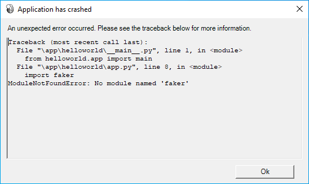

Tutorial 7 - Get this (third-)party started¶
So far, the app we've built has only used our own code, plus the code provided by BeeWare. However, in a real-world app, you'll likely want to use a third-party library, downloaded from the Python Package Index (PyPI).
Let's modify our app to include a third-party library.
Adding a package¶
Let's modify our application to say a little bit more than just "Hi, there!".
To generate some more interesting text for the dialog, we're going to use a library called Faker. Faker is a Python package that generates fake content, including names and text blocks. The names and words in the text block are generated from an arbitrary list of words provided by Faker. We're going to use Faker to construct a fake message, as if someone is responding to the user.
We start by adding faker to our app. Add an import to the top of the app.py to import faker:
import faker
Then modify the say_hello() callback so it looks like this:
async def say_hello(self, widget):
fake = faker.Faker()
await self.main_window.dialog(
toga.InfoDialog(
greeting(self.name_input.value),
f"A message from {fake.name()}: {fake.text()}",
)
)
Let's run our updated app in Briefcase developer mode to check that our change has worked.
(beeware-venv) $ briefcase dev
Traceback (most recent call last):
File ".../venv/bin/briefcase", line 5, in <module>
from briefcase.__main__ import main
File ".../venv/lib/python3.13/site-packages/briefcase/__main__.py", line 3, in <module>
from .cmdline import parse_cmdline
File ".../venv/lib/python3.13/site-packages/briefcase/cmdline.py", line 6, in <module>
from briefcase.commands import DevCommand, NewCommand, UpgradeCommand
File ".../venv/lib/python3.13/site-packages/briefcase/commands/__init__.py", line 1, in <module>
from .build import BuildCommand # noqa
File ".../venv/lib/python3.13/site-packages/briefcase/commands/build.py", line 5, in <module>
from .base import BaseCommand, full_options
File ".../venv/lib/python3.13/site-packages/briefcase/commands/base.py", line 14, in <module>
import faker
ModuleNotFoundError: No module named 'faker'
(beeware-venv) $ briefcase dev
Traceback (most recent call last):
File ".../venv/bin/briefcase", line 5, in <module>
from briefcase.__main__ import main
File ".../venv/lib/python3.13/site-packages/briefcase/__main__.py", line 3, in <module>
from .cmdline import parse_cmdline
File ".../venv/lib/python3.13/site-packages/briefcase/cmdline.py", line 6, in <module>
from briefcase.commands import DevCommand, NewCommand, UpgradeCommand
File ".../venv/lib/python3.13/site-packages/briefcase/commands/__init__.py", line 1, in <module>
from .build import BuildCommand # noqa
File ".../venv/lib/python3.13/site-packages/briefcase/commands/build.py", line 5, in <module>
from .base import BaseCommand, full_options
File ".../venv/lib/python3.13/site-packages/briefcase/commands/base.py", line 14, in <module>
import faker
ModuleNotFoundError: No module named 'faker'
(beeware-venv) C:\...>briefcase dev
Traceback (most recent call last):
File "...\venv\bin\briefcase", line 5, in <module>
from briefcase.__main__ import main
File "...\venv\lib\python3.13\site-packages\briefcase\__main__.py", line 3, in <module>
from .cmdline import parse_cmdline
File "...\venv\lib\python3.13\site-packages\briefcase\cmdline.py", line 6, in <module>
from briefcase.commands import DevCommand, NewCommand, UpgradeCommand
File "...\venv\lib\python3.13\site-packages\briefcase\commands\__init__.py", line 1, in <module>
from .build import BuildCommand # noqa
File "...\venv\lib\python3.13\site-packages\briefcase\commands\build.py", line 5, in <module>
from .base import BaseCommand, full_options
File "...\venv\lib\python3.13\site-packages\briefcase\commands\base.py", line 14, in <module>
import faker
ModuleNotFoundError: No module named 'faker'
You can't run an Android app in developer mode - use the instructions for your chosen desktop platform.
You can't run an iOS app in developer mode - use the instructions for your chosen desktop platform.
What happened? We've added faker to our code, but we haven't added it to the virtual environment that is used to run the app in development mode.
When Briefcase runs an app in development mode, it creates a standalone virtual environment for that application, independent of the environment in which you run briefcase. If your app doesn't declare that it needs a particular library, that library won't be installed in the development virtual environment.
So how do you add a new requirement to your application?
Updating dependencies¶
In the root directory of your app, there is a file named pyproject.toml. This file contains all the app configuration details that you provided when you originally ran briefcase new.
pyproject.toml is broken up into sections; one of the sections describes the settings for your app:
[tool.briefcase.app.helloworld]
formal_name = "Hello World"
description = "A Tutorial app"
long_description = """More details about the app should go here.
"""
sources = ["src/helloworld"]
requires = []
The requires option describes the dependencies of our application. It is a list of strings, specifying libraries (and, optionally, versions of libraries) that you want to be included with your app.
Modify the requires setting so that it reads:
requires = [
"faker",
]
By adding this setting, we're telling Briefcase "when you build my app, run pip install faker into the application bundle". Anything that would be legal input to pip install can be used here - so, you could specify:
- A specific library version (e.g.,
"faker==37.3.0"); - A range of library versions (e.g.,
"faker>=37"); - A path to a git repository (e.g.,
"git+https://github.com/joke2k/faker/"); or - A local file path (However - be warned: if you give your code to someone else, this path probably won't exist on their machine!)
Further down in pyproject.toml, you'll notice other sections that are operating system dependent, like [tool.briefcase.app.helloworld.macOS] and [tool.briefcase.app.helloworld.windows]. These sections also have a requires setting. These settings allow you to define additional platform-specific dependencies - so, for example, if you need a platform-specific library to handle some aspect of your app, you can specify that library in the platform-specific requires section, and that setting will only be used for that platform. You will notice that the toga libraries are all specified in the platform-specific requires section - this is because the libraries needed to display a user interface are platform specific.
In our case, we want faker to be installed on all platforms, so we use the app-level requires setting. The app-level dependencies will always be installed; the platform-specific dependencies are installed in addition to the app-level ones.
Once you've added the new requirement, save pyproject.toml, and run briefcase dev -r. The -r flag tells Briefcase that requirements have changed, and the development virtual environment needs to be updated:
(beeware-venv) $ briefcase dev -r
[helloworld] Activating dev environment...
...
Recreating virtual environment (dev.cpython-313-darwin)... done
[hello-world] Installing requirements...
...
[helloworld] Starting in dev mode...
===========================================================================
When you enter a name and press the button, you should see a dialog that looks something like:

(beeware-venv) $ briefcase dev -r
[helloworld] Activating dev environment...
...
Recreating virtual environment (dev.cpython-313-x86_64-linux-gnu)... done
[hello-world] Installing requirements...
...
[helloworld] Starting in dev mode...
===========================================================================
When you enter a name and press the button, you should see a dialog that looks something like:

(beeware-venv) C:\...>briefcase dev -r
[helloworld] Activating dev environment...
...
Recreating virtual environment (dev.cp313-win_amd64)... done
[hello-world] Installing requirements...
...
[helloworld] Starting in dev mode...
===========================================================================
When you enter a name and press the button, you should see a dialog that looks something like:

You can't run an Android app in developer mode - use the instructions for your chosen desktop platform.
You can't run an iOS app in developer mode - use the instructions for your chosen desktop platform.
Possible errors when running briefcase dev
If you're still getting an error running briefcase dev, make sure:
- You've added
fakerto therequireslist inpyproject.toml; - You've saved your changes to
pyproject.toml; and - You included the
-rargument when runningbriefcase dev -r.
The very first time you run your app using briefcase dev, the -r argument is automatically added for you - that's why we haven't had to use the -r argument until now. The -r argument is only needed when you add, remove, or change a requirement, after running your application in development mode. If you've only updated code, you can run briefcase dev as we have been doing for the rest of this tutorial.
Running the updated app¶
We've now got a working app, using a third party library, running in development mode. Let's get this updated application code packaged as a standalone app. Since we've made code changes, we need to follow the same steps as in Tutorial 4:
Update the code in the packaged app:
(beeware-venv) $ briefcase update
[helloworld] Updating application code...
...
[helloworld] Application updated.
Rebuild the app:
(beeware-venv) $ briefcase build
[helloworld] Adhoc signing app...
[helloworld] Built build/helloworld/macos/app/Hello World.app
And finally, run the app:
(beeware-venv) $ briefcase run
[helloworld] Starting app...
===========================================================================
However, when the app runs, you'll see an error in the console, plus a crash dialog:

Update the code in the packaged app:
(beeware-venv) $ briefcase update
[helloworld] Updating application code...
...
[helloworld] Application updated.
Rebuild the app:
(beeware-venv) $ briefcase build
[helloworld] Finalizing application configuration...
...
[helloworld] Building application...
...
[helloworld] Built build/helloworld/linux/ubuntu/jammy/helloworld-0.0.1/usr/bin/helloworld
And finally, run the app:
(beeware-venv) $ briefcase run
[helloworld] Starting app...
===========================================================================
However, when the app runs, you'll see an error in the console:
Traceback (most recent call last):
File "/usr/lib/python3.13/runpy.py", line 194, in _run_module_as_main
return _run_code(code, main_globals, None,
File "/usr/lib/python3.13/runpy.py", line 87, in _run_code
exec(code, run_globals)
File "/home/brutus/beeware-tutorial/helloworld/build/linux/ubuntu/jammy/helloworld-0.0.1/usr/app/hello_world/__main__.py", line 1, in <module>
from helloworld.app import main
File "/home/brutus/beeware-tutorial/helloworld/build/linux/ubuntu/jammy/helloworld-0.0.1/usr/app/hello_world/app.py", line 8, in <module>
import faker
ModuleNotFoundError: No module named 'faker'
Unable to start app helloworld.
Update the code in the packaged app:
(beeware-venv) C:\...>briefcase update
[helloworld] Updating application code...
...
[helloworld] Application updated.
Rebuild the app:
(beeware-venv) C:\...>briefcase build
...
[helloworld] Built build\helloworld\windows\app\src\Toga Test.exe
And finally, run the app:
(beeware-venv) C:\...>briefcase run
[helloworld] Starting app...
===========================================================================
However, when the app runs, you'll see an error in the console, plus a crash dialog:

Update the code in the packaged app:
(beeware-venv) $ briefcase update android
[helloworld] Updating application code...
...
[helloworld] Application updated.
Rebuild the app:
(beeware-venv) $ briefcase build android
[helloworld] Updating app metadata...
...
[helloworld] Built build/helloworld/android/gradle/app/build/outputs/apk/debug/app-debug.apk
And finally, run the app (selecting a simulator when prompted):
(beeware-venv) $ briefcase run android
[helloworld] Following device log output (type CTRL-C to stop log)...
===========================================================================
However, when the app runs, you'll see an error in the console:
--------- beginning of crash
E/AndroidRuntime: FATAL EXCEPTION: main
E/AndroidRuntime: Process: com.example.helloworld, PID: 8289
E/AndroidRuntime: java.lang.RuntimeException: Unable to start activity ComponentInfo{com.example.helloworld/org.beeware.android.MainActivity}: com.chaquo.python.PyException: ModuleNotFoundError: No module named 'faker'
E/AndroidRuntime: at android.app.ActivityThread.performLaunchActivity(ActivityThread.java:3635)
E/AndroidRuntime: at android.app.ActivityThread.handleLaunchActivity(ActivityThread.java:3792)
E/AndroidRuntime: at android.app.servertransaction.LaunchActivityItem.execute(LaunchActivityItem.java:103)
E/AndroidRuntime: at android.app.servertransaction.TransactionExecutor.executeCallbacks(TransactionExecutor.java:135)
E/AndroidRuntime: at android.app.servertransaction.TransactionExecutor.execute(TransactionExecutor.java:95)
E/AndroidRuntime: at android.app.ActivityThread$H.handleMessage(ActivityThread.java:2210)
E/AndroidRuntime: at android.os.Handler.dispatchMessage(Handler.java:106)
E/AndroidRuntime: at android.os.Looper.loopOnce(Looper.java:201)
E/AndroidRuntime: at android.os.Looper.loop(Looper.java:288)
E/AndroidRuntime: at android.app.ActivityThread.main(ActivityThread.java:7839)
E/AndroidRuntime: at java.lang.reflect.Method.invoke(Native Method)
E/AndroidRuntime: at com.android.internal.os.RuntimeInit$MethodAndArgsCaller.run(RuntimeInit.java:548)
E/AndroidRuntime: at com.android.internal.os.ZygoteInit.main(ZygoteInit.java:1003)
E/AndroidRuntime: Caused by: com.chaquo.python.PyException: ModuleNotFoundError: No module named 'faker'
E/AndroidRuntime: at <python>.helloworld.app.<module>(app.py:8)
E/AndroidRuntime: at <python>.java.chaquopy.import_override(import.pxi:60)
E/AndroidRuntime: at <python>.__main__.<module>(__main__.py:1)
E/AndroidRuntime: at <python>.runpy._run_code(<frozen runpy>:88)
E/AndroidRuntime: at <python>.runpy._run_module_code(<frozen runpy>:98)
E/AndroidRuntime: at <python>.runpy.run_module(<frozen runpy>:226)
E/AndroidRuntime: at <python>.chaquopy_java.call(chaquopy_java.pyx:352)
E/AndroidRuntime: at <python>.chaquopy_java.Java_com_chaquo_python_PyObject_callAttrThrowsNative(chaquopy_java.pyx:324)
E/AndroidRuntime: at com.chaquo.python.PyObject.callAttrThrowsNative(Native Method)
E/AndroidRuntime: at com.chaquo.python.PyObject.callAttrThrows(PyObject.java:232)
E/AndroidRuntime: at com.chaquo.python.PyObject.callAttr(PyObject.java:221)
E/AndroidRuntime: at org.beeware.android.MainActivity.onCreate(MainActivity.java:85)
E/AndroidRuntime: at android.app.Activity.performCreate(Activity.java:8051)
E/AndroidRuntime: at android.app.Activity.performCreate(Activity.java:8031)
E/AndroidRuntime: at android.app.Instrumentation.callActivityOnCreate(Instrumentation.java:1329)
E/AndroidRuntime: at android.app.ActivityThread.performLaunchActivity(ActivityThread.java:3608)
E/AndroidRuntime: ... 12 more
I/Process : Sending signal. PID: 8289 SIG: 9
Update the code in the packaged app:
(beeware-venv) $ briefcase update iOS
[helloworld] Updating application code...
...
[helloworld] Application updated.
Rebuild the app:
(beeware-venv) $ briefcase build iOS
[helloworld] Updating app metadata...
...
[helloworld] Built build/helloworld/ios/xcode/build/Debug-iphonesimulator/Hello World.app
And finally, run the app (selecting a simulator when prompted):
(beeware-venv) $ briefcase run iOS
...
[helloworld] Following simulator log output (type CTRL-C to stop log)...
===========================================================================
However, when the app runs, you'll see an error in the console
Application has crashed!
========================
Traceback (most recent call last):
File "/Users/rkm/Library/Developer/CoreSimulator/Devices/FD7EA28A-6D72-4064-9D8A-53CC8308BB6F/data/Containers/Bundle/Application/D9DD590B-DA32-4EE1-8F78-78658379CAB7/Hello World.app/app/helloworld/__main__.py", line 1, in <module>
from helloworld.app import main
File "/Users/rkm/Library/Developer/CoreSimulator/Devices/FD7EA28A-6D72-4064-9D8A-53CC8308BB6F/data/Containers/Bundle/Application/D9DD590B-DA32-4EE1-8F78-78658379CAB7/Hello World.app/app/helloworld/app.py", line 8, in <module>
import faker
ModuleNotFoundError: No module named 'faker'
Once again, the app has failed to start because faker has not been installed - but why? Haven't we already installed faker?
We have - but only in the development environment. Each built application also has its own standalone environment, which is one of the things Briefcase produces when you run briefcase build. When we ran briefcase dev -r, we added faker to our development environment, but not to the packaged app. We also need to run briefcase update -r so that Briefcase knows the requirements of the packaged app have changed:
(beeware-venv) $ briefcase update -r
[helloworld] Updating application code...
Installing src/hello_world...
[helloworld] Updating requirements...
Collecting faker
Using cached faker-37.3.0-py3-none-any.whl.metadata (15 kB)
...
Installing collected packages: tzdata, travertino, std-nslog, rubicon-objc, fonttools, toga-core, faker, toga-cocoa
Successfully installed faker-37.3.0 fonttools-4.58.1 rubicon-objc-0.5.1 std-nslog-1.0.3 toga-cocoa-0.5.1 toga-core-0.5.1 travertino-0.5.1 tzdata-2025.2
[helloworld] Removing unneeded app content...
...
[helloworld] Application updated.
(beeware-venv) $ briefcase update -r
[helloworld] Finalizing application configuration...
Targeting ubuntu:jammy (Vendor base debian)
Determining glibc version... done
Targeting glibc 2.35
Targeting Python3.13
[helloworld] Updating application code...
Installing src/hello_world...
[helloworld] Updating requirements...
Collecting faker
Using cached faker-37.3.0-py3-none-any.whl.metadata (15 kB)
...
Installing collected packages: tzdata, travertino, std-nslog, rubicon-objc, fonttools, toga-core, faker, toga-cocoa
Successfully installed faker-37.3.0 fonttools-4.58.1 rubicon-objc-0.5.1 std-nslog-1.0.3 toga-cocoa-0.5.1 toga-core-0.5.1 travertino-0.5.1 tzdata-2025.2
[helloworld] Removing unneeded app content...
...
[helloworld] Application updated.
(beeware-venv) C:\...>briefcase update -r
[helloworld] Updating application code...
Installing src/helloworld...
[helloworld] Updating requirements...
Collecting faker
Using cached faker-37.3.0-py3-none-any.whl.metadata (15 kB)
...
Installing collected packages: tzdata, travertino, std-nslog, rubicon-objc, fonttools, toga-core, faker, toga-cocoa
Successfully installed faker-37.3.0 fonttools-4.58.1 rubicon-objc-0.5.1 std-nslog-1.0.3 toga-cocoa-0.5.1 toga-core-0.5.1 travertino-0.5.1 tzdata-2025.2
[helloworld] Removing unneeded app content...
...
[helloworld] Application updated.
(beeware-venv) $ briefcase update android -r
[helloworld] Updating application code...
Installing src/helloworld... done
[helloworld] Updating requirements...
Writing requirements file... done
[helloworld] Removing unneeded app content...
Removing unneeded app bundle content... done
[helloworld] Application updated.
(beeware-venv) $ briefcase update iOS -r
[helloworld] Updating application code...
Installing src/helloworld... done
[helloworld] Updating requirements...
Looking in indexes: https://pypi.org/simple, https://pypi.anaconda.org/beeware/simple
Collecting faker
Using cached faker-37.4.0-py3-none-any.whl.metadata (15 kB)
...
Installing app requirements for iPhone simulator... done
[helloworld] Removing unneeded app content...
Removing unneeded app bundle content... done
[helloworld] Application updated.
Once you've updated, you can run briefcase build and briefcase run - and you should see your packaged app, with the new dialog behavior.
Note
The -r option for updating requirements is also honored by the build and run command, so if you want to update, build, and run in one step, you could use briefcase run -u -r.
Third-Party Python Packages for Mobile and Web¶
Faker is just one example of a third-party Python package - a collection of code that isn't part what Python provides out of the box. These third-party packages are most commonly distributed using the Python Package Index (PyPI), and installed into your local virtual environment. We've been using pip in this tutorial, but there are other options.
On desktop platforms (macOS, Windows, Linux), essentially any package on PyPI package can be installed into your virtual environment, or added to your app's requirements. However, when building an app for mobile or web platforms, your options are slightly limited.
In short; any pure Python package (i.e. any package created from a project written only in Python) can be used without difficulty. Some packages, though, are created from projects that contain both Python and other languages (e.g. C, C++, Rust, etc). Code written in those languages needs to be compiled to platform-specific binary modules before it can be used, and those pre-compiled binary modules are only available on specific platforms. Mobile and web platforms have very different requirements than "standard" desktop platforms. At this time, most Python packages don't provide pre-compiled binaries for mobile and web platforms.
On PyPI, packages are often provided in a pre-built distribution format called wheels. To check whether a package is pure Python, look at the PyPI downloads page for the project. If the wheels provided have a -py3-none-any.whl suffix (e.g., Faker), then they are pure Python wheels. However, if the wheels have version and platform-specific extensions (e.g., Pillow, which has wheels with suffixes like -cp313-cp313-macosx_11_0_arm64.whl and -cp39-cp39-win_amd64.whl), then the wheel contains a binary component. That package cannot be installed on mobile or web platforms unless a wheel compatible with those platforms has been provided.
At this time, most binary packages on PyPI don't provide mobile- or web-compatible wheels. To fill this gap, BeeWare provides binaries for some popular binary modules (including numpy, pandas, and cryptography). These wheels are not distributed on PyPI, but Briefcase will install those wheels if they're available.
It's usually possible to compile binary packages for mobile platforms, but it's not easy to set up – well outside the scope of an introductory tutorial like this one.
Next steps¶
We've now got an app that uses a third-party library! In Tutorial 8 we'll learn how to ensure our app remains responsive as we add more complex application logic.